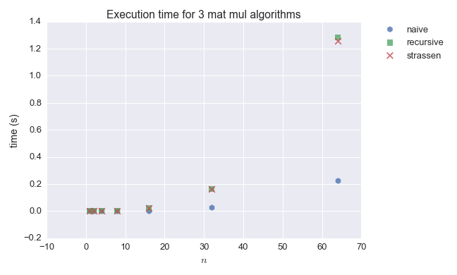
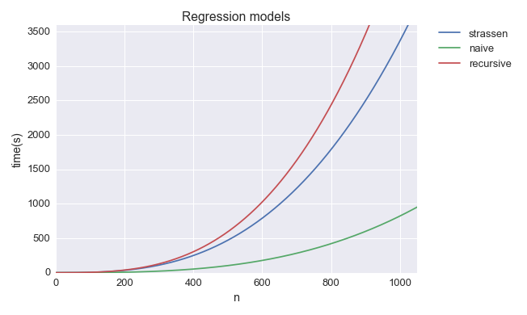

Time Complexity of Matrix Multiplication
Time Complexity of Matrix Multiplication¶
Charles Franzen
This project investigates the time complexity of different matrix multiplication algorithms. The objectives of the project are:
- understand and implement the naive, recursive and strassen algorithms for matrix multiplication
- run experiments to measure the run-time for each algorithm for different sized $n$
- extrapolate from this data to find crossing over points at which one algorithm becomes more efficient than another
Companion code for this project is found on my github.
Algorithm overview and implementation¶
All of these algorithms calculate the dot product of $A$ and $B$:
$$C = A \cdot B$$For the sake of simplicity, all inputs are restricted to square matrices of dimensions $n\times n$, where $n$ is a power of $2$.
Naive¶
The naive algorithm calculates $C$ by calculating $n^2$ dot products of the rows of $A$ and the columns of $B$:
$$C_{ij} = \sum_{k=1}^{n}A_{ik} \cdot B_{kj}$$Pseudocode:
def naive_mat_mul(A, B)
n = num_rows(A)
C = new n x n zero matrix
for i=1 to n:
for j=1 to n:
for k=1 to n:
C_ij += sum(A_ik * B_kj)
return CSee the implementation in mat_mul.py.
The nested for loops make it clear that $$\text{naive(}A,\text{ }B) = O(n^3)$$
Recursive¶
The recursive algorithm subdivides $A$ and $B$ and calculates $C$ as a set of dot products of these partitions.
Partition $A$, $B$, and $C$ in to four $n/2 \times n/2$ matrices:
$A = \begin {bmatrix} A_{11} & A_{12} \\ A_{21} & A_{22}\end {bmatrix}$, $B = \begin{bmatrix} B_{11} & B_{12} \\ B_{21} & B_{22}\end {bmatrix}$, $C = \begin {bmatrix} C_{11} & C_{12} \\ C_{21} & C_{22}\end {bmatrix}$
The equation $C = A \cdot B$ can be rewritten as:
$\begin {bmatrix} C_{11} & C_{12} \\ C_{21} & C_{22}\end {bmatrix} = \begin {bmatrix} A_{11} & A_{12} \\ A_{21} & A_{22}\end {bmatrix} \cdot \begin{bmatrix} B_{11} & B_{12} \\ B_{21} & B_{22}\end {bmatrix}$
which corresponds to these four equations: $$C_{11} = A_{11} \cdot B_{11} + A_{12} \cdot B_{21}$$ $$C_{12} = A_{11} \cdot B_{12} + A_{12} \cdot B_{22}$$ $$C_{21} = A_{21} \cdot B_{11} + A_{22} \cdot B_{21}$$ $$C_{22} = A_{21} \cdot B_{12} + A_{22} \cdot B_{22}$$
Each of these smaller dot products can be subdivided in the same way, leading to a recursive algorithm (see mat_mul.py).
Pseudocode:
def recursive_mat_mul(A, B):
n = num_rows(A)
C = new n x n zero matrix
if n == 1:
C = A * B
else:
divide A and B as shown above
calculate each quadrant of C as shown above
return CNote that each call to recursive_mat_mul triggers $8$ further calls. As a result of this property, it can be shown that
$$\text{recursive(}A,\text{ }B) = O(n^{{log}_2 8}) = O(n^3)$$
Strassen¶
The Strassen algorithm is also recursive, and also works by subdividing $A$, $B$, and $C$. The key difference is that the Strassen algorithm uses a number of matrix additions to reduce the number of multiplications for each call.
Subdivide $A$, $B$, and $C$ as in the recursive algorithm. Then create the following $7$ matrices:
$M_1 = (A_{11} + A_{22}) \cdot (B_{11} + B_{22}) $
$M_2 = (A_{21} + A_{22}) \cdot B_{11}$
$M_3 = A_{11} \cdot (B_{12} - B_{22})$
$M_4 = A_{22} \cdot (B_{21} - B_{11})$
$M_5 = (A_{11} + A_{12}) \cdot B_{22}$
$M_6 = (A_{21} - A_{11}) \cdot (B_{11} + B_{12})$
$M_7 = (A_{12} - A_{22}) \cdot (B_{21} + B_{22})$
Now, $C$ can be derived as additions of these matrices as follows:
$C_{11} = M_1 + M_4 - M_5 + M_7$
$C_{12} = M_3 + M_5$
$C_{21} = M_2 + M_4$
$C_{22} = M_1 - M_2 + M_3 + M_6$
Pseudocode:
def strassen_mat_mul(A, B):
n = num_rows(A)
C = new n x n zero matrix
if n == 1:
C = A * B
else:
divide A and B as in the recursive algorithm
calcuate the 7 intermediate matrices as shown above
calculate each quadrant of C as shown above
return CSee the implementation in mat_mul.py.
Each call to strassen_mat_mul triggers 7 recursive calls. It can be shown, then, that
$$\text{strassen(}A,\text{ }B) = O(n^{{log}_2 7}) = O(n^{\approx 2.8})$$
Comparison¶
The naive algorithm is straightforward to understand and implement. There's also very little overhead for each operation. In contrast, the recursive algorithm is a bit harder to understand, and the indexing is tedious. The recursive algorithm also has quite a bit of overhead, as lots of new matrices have to be created in memory, and the relatively complex recursive_mat_mul function has to be called many times, whereas the naive algorithm simply calls A[i, k] * B[k, j] over and over.
The Strassen algorithm has the most overhead, as 7 new matrices and a variety of matrix additions occur for every call. This means that the coefficients on the terms of the asymtotic complexity are quite high. Consequently, it takes a while for the strassen algorithm to overtake an $O(n^{3})$ function with lower coefficients. This means that the cross over points at which the Strassen algorithm becomes more efficient than the naive or recursive algorithms might be at very large $n$.
Measuring performance on my machine¶
In the module mat_mul.py I provide a function for measuring execution times for different mat_mul functions at different $n$. These experiments take a while to run at large $n$, so 64 is the maximum $n$ that I actually tested on my machine. To account for the precision of my machine's clock and variability in execution time, I've averaged 3000 trials for the naive algorithm, and 300 trials for the recursive and Strassen algorithms.
The results (average execution time in seconds):
| n | naive | recursive | strassen |
|---|---|---|---|
| 1 | 5.99e-06 | 1.31e-06 | 1.81e-06 |
| 2 | 1.61e-05 | 8.86e-05 | 9.42e-05 |
| 4 | 7.79e-05 | 3.40e-04 | 4.54e-04 |
| 8 | 5.15e-04 | 2.46e-03 | 3.25e-03 |
| 16 | 3.65e-03 | 0.0197 | 0.0227 |
| 32 | 0.0290 | 0.163 | 0.161 |
| 64 | 0.225 | 1.29 | 1.26 |

At first, the naive algorithm grows much more slowly than the recursive and Strassen algorithms. In fact, the Strassen algorithm has the worst performance of the three for small $n$.
Extrapolate to estimate cross-over points¶
By fitting a polynomial regression line to each set of data points, cross-over points can be estimated for these approaches to matrix multiplication.
The crossover point for the recursive and strassen algorithms is fairly early, at just $n=32$, and is shown in the experimental data. Finding a crossover point for the naive and strassen algorithms was a little trickier.
The fitted regression models have very small coefficients for the $n^3$ and $n^{{log_27}}$ terms. Here is a plot of the models up to $n=1024$:

I timed a 1024 x 1024 multiplication for the naive and strassen methods, and the times (~17m and ~45m, respectively) matched the regression predictions fairly closely. A back of the envelope calculation for a crossover point led to an estimate of around $n=$ 3e14 for the point at which the strassen algorithm outperforms the naive. Obviously, this result was a bit disappointing, as I'd hoped to find that the strassen algorithm caught up to the naive fairly quickly. It seems that Python implementations involve too much overhead to benefit from the lower computational complexity of the strassen algorithm. I tried a couple different versions of the strassen algorithm, but wasn't able to improve execution time this way. Most of the papers that I read on this topic involved code written in C or Java. These researchers were able to find crossover points ranging from $n=450$ to $n=1024$.
References¶
-
Cormen, Thomas H., and Charles E. Leiserson. Introduction to Algorithms, 3rd Edition. Cambridge: MIT, 2009. p. 75-82
-
D’Alberto, Paolo, and Alexandru Nicolau. "Using Recursion to Boost ATLAS’s Performance." High-Performance Computing Lecture Notes in Computer Science (n.d.): 142-51. https://www.ics.uci.edu/~paolo/Reference/paoloA.ishp-vi.pdf
-
Bailey, David H., King Lee, and Horst D. Simon. "Using Strassen's Algorithm to Accelerate the Solution of Linear Systems." The Journal of Supercomputing 4.4 (1991): 357-71. http://crd-legacy.lbl.gov/~dhbailey/dhbpapers/strassen.pdf
-
Mathew, Juby, and R. Vijaya Kumar. "Comparative Study of Strassen’s Matrix Multiplication Algorithm." International Journal of Computer Science And Technology 3.1 (2012): 749-54. http://www.ijcst.com/vol31/4/juby.pdf
Comments
Comments powered by Disqus